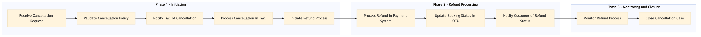

This process document outlines the cancellation processing and refund initiation workflow for OTA (Expedia Group) and TMC (Amex GBT / SAP Concur) systems.
| Trigger | A customer initiates a cancellation request through the Expedia Open World, Partner Central, or any other supported OTA system. |
| Outcome | The booking is successfully cancelled, and the appropriate refund is initiated to the customer's payment method. |
| Systems | Expedia Open World Partner Central Amadeus NDC Sabre GDS Travelport EVC One Key TravelAds AWS SageMaker Snowflake Kafka Salesforce Tableau SAP Concur T2 SAP Concur Expense Amex GBT Neo/Complete SAP S/4HANA International SOS Cvent Amex Corporate Card VCN SAP Analytics Cloud Workday |

Click to enlarge
| Step | Name & Pain Point | Role | System | Input | Output | KPI | Flags |
|---|---|---|---|---|---|---|---|
| 1.1 | Receive Cancellation Request Handling cancellations during peak travel seasons | Customer Service | Expedia Open World, Partner Central | Cancellation request from customer | Acknowledgment of cancellation request | Response time within 5 minutes | ⚠ Exception |
| 1.2 | Validate Cancellation Policy Complexity in handling different cancellation policies | Policy Engine | AWS SageMaker, Snowflake | Booking details and cancellation request | Validation result (eligible/ineligible) | Accuracy of policy validation > 95% | ◆ Decision |
| 1.3 | Notify TMC of Cancellation Real-time integration between OTA and TMC systems | Integration Layer | Kafka, Salesforce | Validation result and booking details | Notification to SAP Concur T2, Amex GBT Neo/Complete | Notification success rate > 98% | ⚠ Exception |
| 1.4 | Process Cancellation in TMC Handling cancellations with multiple suppliers | TMC Operations | SAP Concur T2, SAP S/4HANA | Cancellation notification and booking details | Cancellation confirmation | Cancellation processing time < 10 minutes | ⚠ Exception |
| 1.5 | Initiate Refund Process Ensuring timely refunds for high-value transactions | Finance Department | SAP S/4HANA, Amex Corporate Card | Cancellation confirmation and booking details | Refund initiation request | Refund initiation time < 2 hours | ⚠ Exception |
| 1.6 | Process Refund in Payment System Handling refunds with multiple payment processors | Payment Processor | Amex Corporate Card, VCN | Refund initiation request and booking details | Refund confirmation | Refund processing time < 24 hours | ⚠ Exception |
| 1.7 | Update Booking Status in OTA Synchronization between OTA and TMC systems | Integration Layer | Kafka, Salesforce | Refund confirmation and booking details | Updated booking status | Booking status update time < 5 minutes | ⚠ Exception |
| 1.8 | Notify Customer of Refund Status Handling multiple communication channels | Customer Service | Expedia Open World, Partner Central | Refund confirmation and booking details | Notification to customer | Customer notification time < 1 hour | ⚠ Exception |
| 1.9 | Monitor Refund Process Real-time monitoring of large volumes of refunds | Finance Department | SAP Analytics Cloud, Tableau | Refund initiation and confirmation details | Refund status report | Refund monitoring accuracy > 90% | ⚠ Exception |
| 1.10 | Close Cancellation Case Handling complex cancellation cases | Customer Service | Workday, Salesforce | Refund confirmation and booking details | Closed case record | Case closure time < 2 hours | ⚠ Exception |